Displaying Images
The imview and implot functions are very similar. Both allow any abstract array of numbers to be rendered into an image or a Plots.jl image series. implot is largely a superset of imview because it also supports colorbars, tick marks, WCS grid lines, overplotting other data & shapes, and automatic axis and title naming (from the FITS header if available).
imview
Any AbstractArray (including an AstroImage) can be displayed using imview. This function renders an arbitrary array into an array of RGBA values using a number of parameters. If the input is an AstroImage{<:Number}, an AstroImage{RGBA} will be returned that retains headers, WCS information, etc.
The defaults for the imview function are:
img = randn(50,50);
imview(img; clims=Percent(99.5), cmap=:magma, stretch=identity, contrast=1.0, bias=0.5)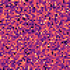
We can adjust the color limits explicitly:
imview(img; clims=(-1, 1))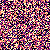
Or pass a function/callable object to calculate them for us:
imview(img; clims=Zscale())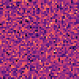
We can turn off the colormap and use it in grayscale mode:
imview(img; cmap=nothing)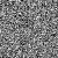
Pass any color scheme from ColorSchemes.jl:
imview(img; cmap=:ice)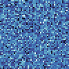
imview(img; cmap=:seaborn_rocket_gradient)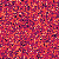
Or an RGB or named color value:
imview(img; cmap="#F00")
imview(img; cmap="red")![]()
Let's now switch to an astronomical image:
fname = download(
"https://ds9.si.edu/download/data/656nmos.fits",
"eagle-656nmos.fits"
);
eagle = AstroImage("eagle-656nmos.fits")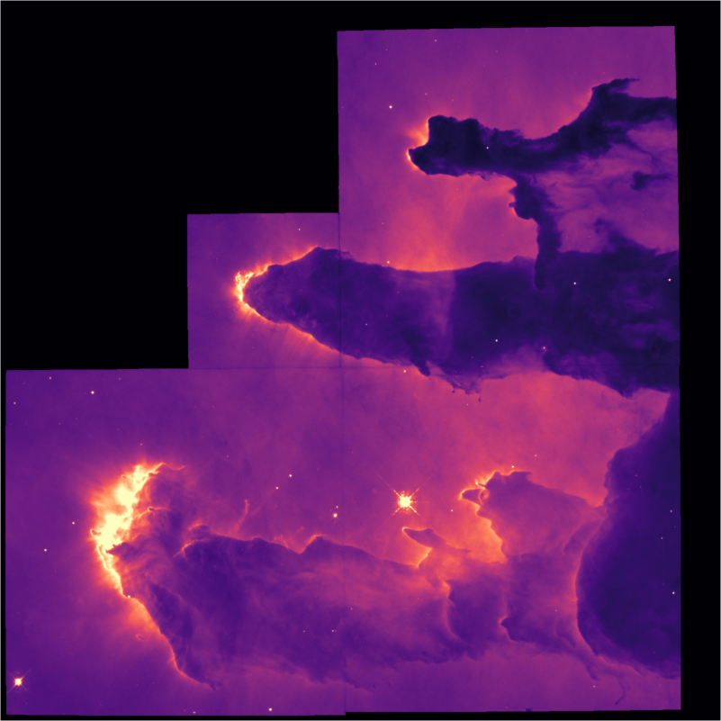
We can apply a non-linear stretch like a log-scale, power-scale, or asinh stretch:
imview(eagle, stretch=asinhstretch)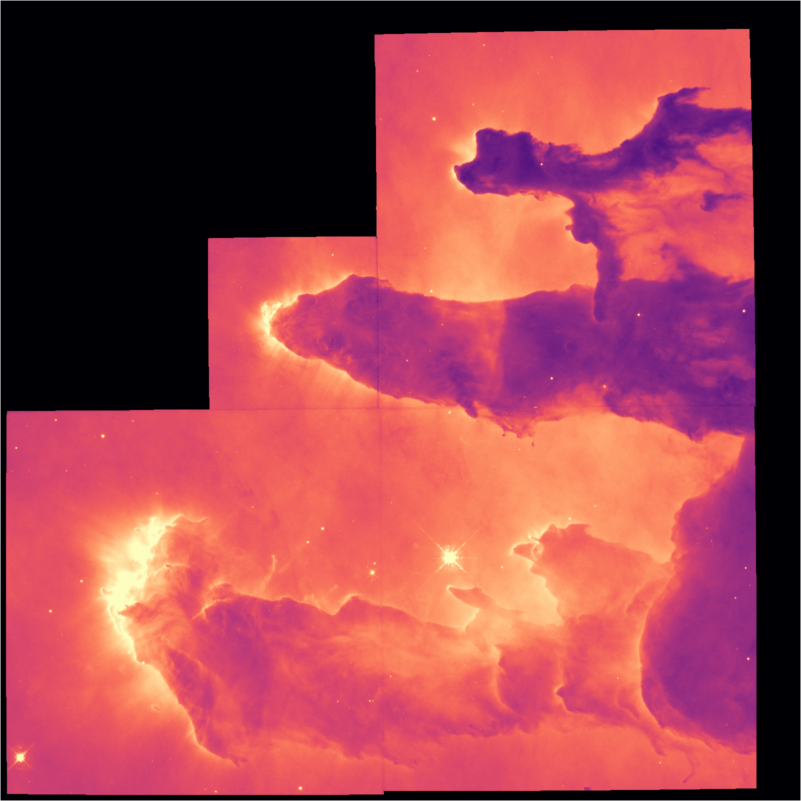
Once rendered, we can also tweak the bias and contrast:
imview(eagle, stretch=asinhstretch, contrast=1.5)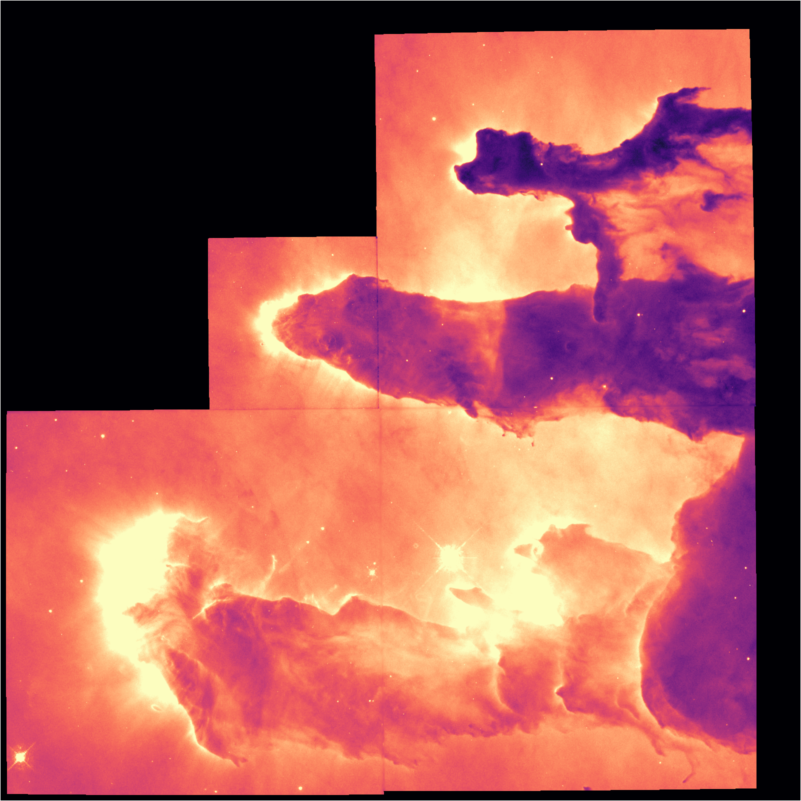
imview(eagle, stretch=asinhstretch, contrast=1.5, bias=0.6)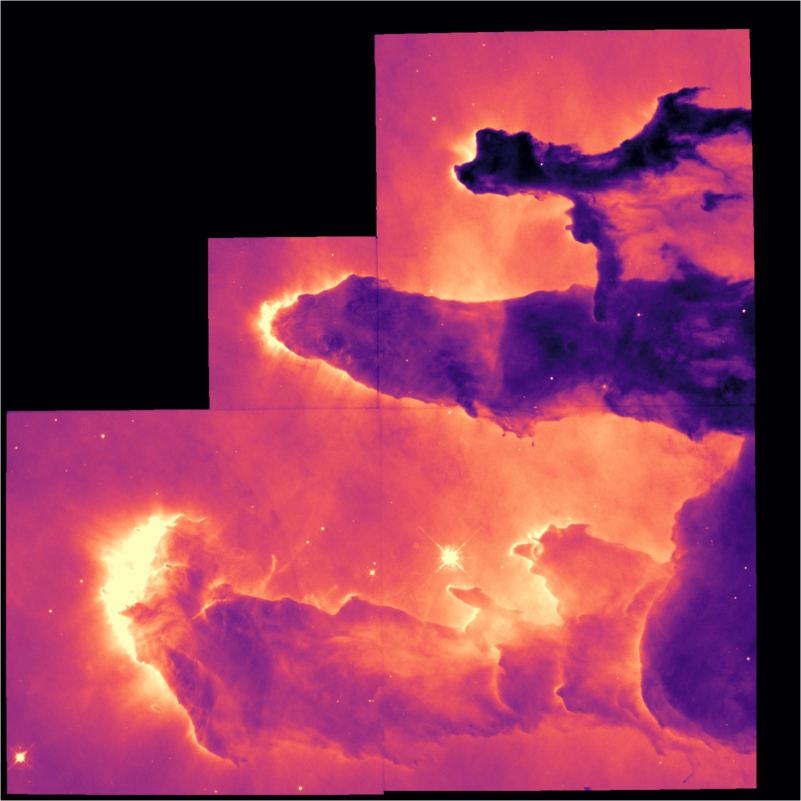
These are the parameters that change when you click and drag in some applications like DS9.
Once rendered via imview, the resulting image can be saved in traditional image formats like PNG, JPG, GIF, etc:
save("out.png", imview(eagle, cmap=:viridis))Very large Images are automatically downscaled to ensure consistent performance using restrict from Images.jl. This function filters the data before downscaling to prevent aliasing, so it may take a moment for truly huge images. In these cases, a faster method that doesn't prevent aliasing would be imview(img[begin:10:end, begin:10:end]) or similar.
imview is called automatically on AstroImage{<:Number} when using a Julia environment with rich graphical IO capabilities (e.g. VSCode, Jupyter, Pluto, etc.). The defaults for this case can be modified using AstroImages.set_clims!(...), AstroImages.set_cmap!(...), and AstroImages.set_stretch!(...).
Note on Views
The function imview has its name because it produces a "view" into the image. The result from calling imview is an object that lazily maps data values into RGBA colors on the fly. This means that if you change the underlying data array, the view will update (the next time it is shown). If you have many data files to render, you may find it faster to create a single imview and then mutate the data in the underlying array. This is faster since imview only has to resolve colormaps and compute limits once.
For example:
data = randn(100,100)
iv = imview(data)
display(iv)
data[1:50,1:50] .= 0
display(iv)iv will reflect the changes to data when it is displayed the second time.
implot
implot is a Plots.jl recipe, which means before you can use it you first have to load Plots.jl:
using Plotsimplot accepts all the arguments imview does for controlling how data is rendered to the screen:
implot(img; clims=Percent(99.5), cmap=:magma, stretch=identity, contrast=1.0, bias=0.5)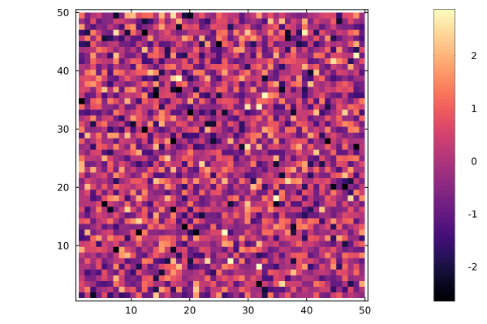
For more on implot, including offset dimensions and world coordinates, see Dimensions and World Coordinates.